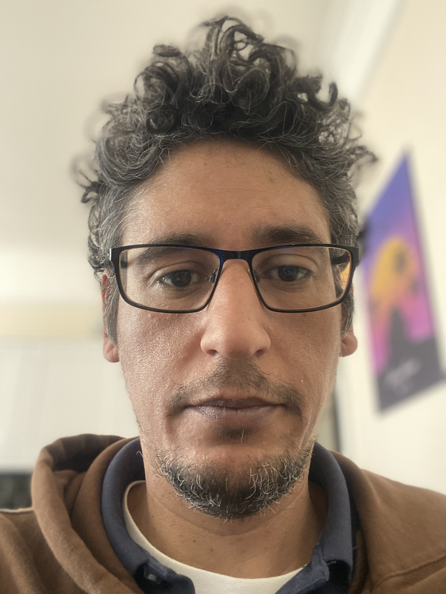

Otto Martinez

Summary
I have worked mostly in the health industry, both NHS and private. I'm currently looking for a change of career. I have started a course to become a full stack web developer with the hope of one day working as a game developer.
Education
- European Institute of Fitness
- ICMP Institute of Contempary Music Performance
- Hertford Regional College
- The King's Hospital School (Dublin)
- Bush Hill Park Primary School
Work experience
- NHS Chelsea & Westminster trust
- Pharmacy Assistant
- Reciving and checking deliveries of drug medication
- Inputing stock onto Wellsky, the computer stock managment system of drugs in the hospital
- Restocking medication into dispensing robot and shelves in the pharmacy
- Restocking wards of medication that is running low or out of stock
- Skin Care Network Ltd
- Receptionist and Admin
- Greeting patients, booking and sheduling patient treatments and appointments
- Contacting patients, Insurance companies and health practioners via email or telephone
- Hosting GP lecture evenings on behalf of the clinic
- Liasing with doctors and nurses about patient treatments
- NHS Royal Free Trust
- Receptionist and Admin
- Getting patient files ready for clinic
- Booking patients in and out of appointments
- Directing patient to the right clinic
- Booking minor operations for patients with the Dermatology team
Skills
- Touch typing 40wpm
- Telephone and email communication
- Word, Excel and Office proficient
- Organised and a high level of detail orientation
Awards/Certificates
- EIF Master trainer (personal trainer)
- Diploma in music performance
- YMCA level 2 fitness instuctor
- Leaving certificate (Ireland)